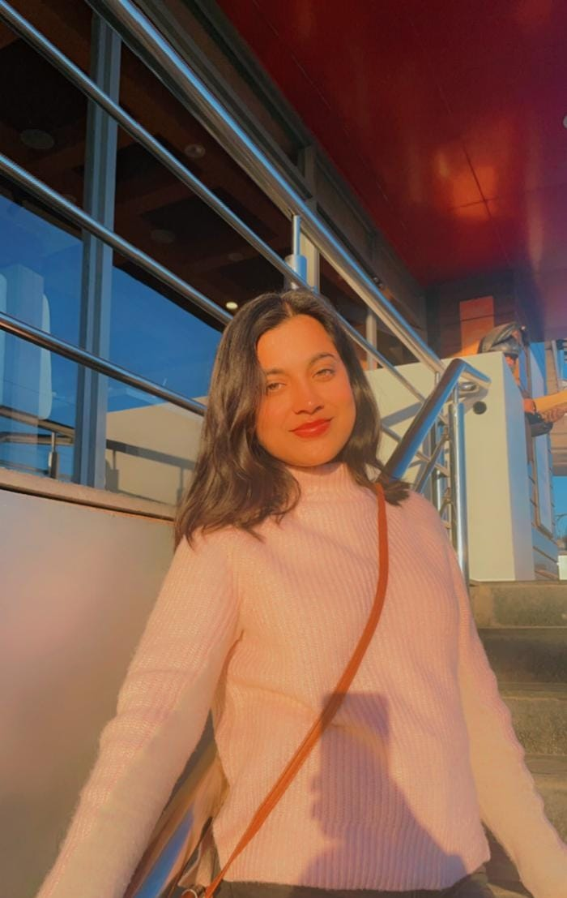

Kanishka Singh

Summary
I am a mechanical engineer with a strong affinity for coding. Beyond my engineering skills, I have spent considerable time exploring various programming languages and developing my coding abilities. I'm thrilled by the possibilities of combining coding with mechanical engineering to achieve remarkable advancements and innovations.
Skills
- c/c++
- HTML,CSS,JavaScript
- Python
- Autocad
- Adaptability and Teamwork skill
Experience and Training
Certificates
Web Development(2023)
UDEMY
Certificate of Training(09/2022-11/2022)
HERSHEYS INDIA
Automobile Design Workshop(2022)
REAL CAD DESIGN
Autocad(2021)
INTERNSHALA
Python Fundamental(2021)
GUVI TECH
Personal Projects
Manually Controlled Boat(2019)
- Build a manually controlled, wireless boat that has to sail through the obstacles in the arena and complete the race in the TECHFEST conducted by IIT-BOMBAY.
Education
- Bachelor of Engineering-UIT,RGPV (2019-2023)
- Higher Secondary(12th)-Kendriya Vidyalaya Ordnance Factory Itarsi(2016)
- Secondary(10th)-Kendriya Vidyalaya Ordnance Factory Itarsi(2018)
Others